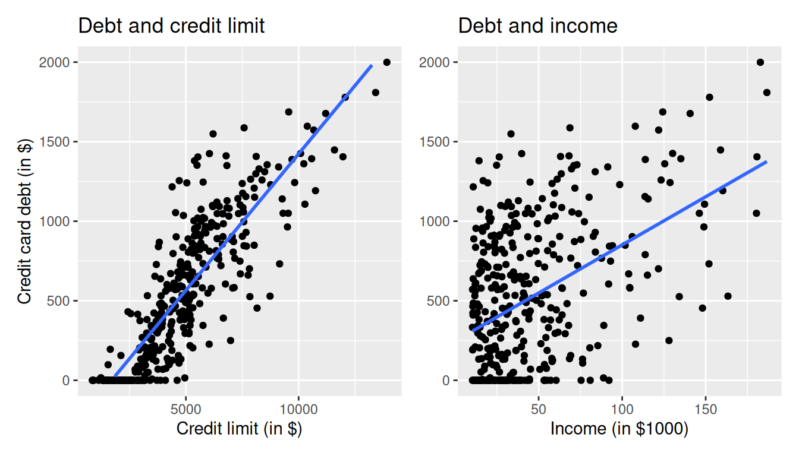
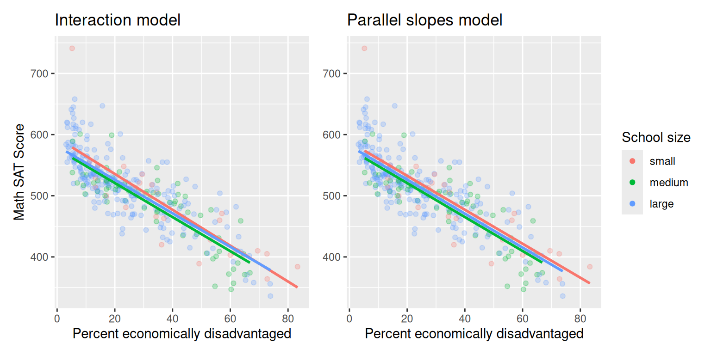

library(tidyverse)
library(moderndive)
library(skimr)
library(ISLR2)6 Multiple Regression
In Chapter 5 we introduced ideas related to modeling for explanation, in particular that the goal of modeling is to make explicit the relationship between some outcome variable \(y\) and some explanatory variable \(x\). While there are many approaches to modeling, we focused on one particular technique: linear regression, one of the most commonly-used and easy-to-understand approaches to modeling. Furthermore to keep things simple we only considered models with one explanatory \(x\) variable that was either numerical in Section 5.1 or categorical in Section 5.2.
In this chapter on multiple regression, we’ll start considering models that include more than one explanatory variable \(x\). You can imagine when trying to model a particular outcome variable, like teaching evaluation scores as in Section 5.1 or life expectancy as in Section 5.2, that it would be useful to include more than just one explanatory variable’s worth of information.
Since our regression models will now consider more than one explanatory variable, the interpretation of the associated effect of any one explanatory variable must be made in conjunction with the other explanatory variables included in your model. Let’s begin!
Needed packages
Let’s load all the packages needed for this chapter (this assumes you’ve already installed them). Recall from our discussion in Subsection 4.4.1 that loading the tidyverse package by running library(tidyverse) loads the following commonly used data science packages all at once:
ggplot2for data visualizationdplyrfor data wranglingtidyrfor converting data to “tidy” formatreadrfor importing spreadsheet data into R- As well as the more advanced
purrr,tibble,stringr, andforcatspackages
If needed, read Section 1.3 for information on how to install and load R packages.
6.1 Two numerical explanatory variables
Let’s first consider a multiple regression model with two numerical explanatory variables. The dataset we’ll use is from “An Introduction to Statistical Learning with Applications in R, (Second Edition)”, an intermediate-level textbook on statistical and machine learning. Its accompanying ISLR2 R package contains the datasets that the authors apply various machine learning methods to.
One frequently used dataset in this book is the Credit dataset, where the outcome variable of interest is the credit card debt of 400 individuals. Other variables like income, credit limit, credit rating, and age are included as well. Note that the Credit data is not based on real individuals’ financial information, but rather is a simulated dataset used for educational purposes.
In this section, we’ll fit a regression model where we have
- A numerical outcome variable \(y\), the cardholder’s credit card debt
- Two explanatory variables:
- One numerical explanatory variable \(x_1\), the cardholder’s credit limit
- Another numerical explanatory variable \(x_2\), the cardholder’s income (in thousands of dollars).
6.1.1 Exploratory data analysis
Let’s load the Credit dataset, but to keep things simple let’s select() only the subset of the variables we’ll consider in this chapter, and save this data in a new data frame called credit_ch6. Notice our slightly different use of the select() verb here than we introduced in Subsection 3.8.1. For example, we’ll select the Balance variable from Credit but then save it with a new variable name debt. We do this because here the term “debt” is a little more interpretable than “balance.”
library(ISLR2)
credit_ch6 <- Credit %>%
as_tibble() %>%
select(debt = Balance, credit_limit = Limit,
income = Income, credit_rating = Rating, age = Age)Recall the three common steps in an exploratory data analysis we saw in Subsection 5.1.1:
- Looking at the raw data values.
- Computing summary statistics.
- Creating data visualizations.
Let’s begin by looking at the raw values either in RStudio’s spreadsheet viewer or by using the glimpse() function from the dplyr package. You can observe the effect of our use of select() to keep and rename the relevant variables.
glimpse(credit_ch6)Rows: 400
Columns: 5
$ debt <dbl> 333, 903, 580, 964, 331, 1151, 203, 872, 279, 1350, 1407…
$ credit_limit <dbl> 3606, 6645, 7075, 9504, 4897, 8047, 3388, 7114, 3300, 68…
$ income <dbl> 14.9, 106.0, 104.6, 148.9, 55.9, 80.2, 21.0, 71.4, 15.1,…
$ credit_rating <dbl> 283, 483, 514, 681, 357, 569, 259, 512, 266, 491, 589, 1…
$ age <dbl> 34, 82, 71, 36, 68, 77, 37, 87, 66, 41, 30, 64, 57, 49, …Furthermore, let’s look at a random sample of five out of the 400 credit card holders in Table 6.1. Once again, note that due to the random nature of the sampling, you will likely end up with a different subset of five rows.
set.seed(9)
credit_ch6 %>%
sample_n(size = 5)| debt | credit_limit | income | credit_rating | age |
|---|---|---|---|---|
| 1259 | 8376 | 123.3 | 610 | 89 |
| 227 | 6033 | 108.0 | 449 | 64 |
| 467 | 4534 | 32.8 | 333 | 44 |
| 846 | 7576 | 94.2 | 527 | 44 |
| 436 | 4866 | 45.0 | 347 | 30 |
Now that we’ve looked at the raw values in our credit_ch6 data frame and have a sense of the data, let’s move on to the next common step in an exploratory data analysis: computing summary statistics. As we did in our exploratory data analyses in Subsections 5.1.1 and 5.2.1 from the previous chapter, let’s use the skim() function from the skimr package, being sure to only select() the variables of interest in our model:
credit_ch6 %>%
select(debt, credit_limit, income) %>%
skim()Skim summary statistics
n obs: 400
n variables: 3
── Variable type:integer ───────────────────────────────────────────────────────
variable missing complete n mean sd p0 p25 p50 p75 p100
credit_limit 0 400 400 4735.6 2308.2 855 3088 4622.5 5872.75 13913
debt 0 400 400 520.01 459.76 0 68.75 459.5 863 1999
── Variable type:numeric ───────────────────────────────────────────────────────
variable missing complete n mean sd p0 p25 p50 p75 p100
income 0 400 400 45.22 35.24 10.35 21.01 33.12 57.47 186.63Observe the summary statistics for the outcome variable debt: the mean and median credit card debt are $520.01 and $459.50 respectively and that 25% of card holders had debts of $68.75 or less. Let’s now look at one of the explanatory variables credit_limit: the mean and median credit card limit are $4735.6 and $4622.50 respectively while 75% of card holders had incomes of $57,470 or less.
Since our outcome variable debt and the explanatory variables credit_limit and income are numerical, we can compute the correlation coefficient between the different possible pairs of these variables. First, we can run the cor() command as seen in Subsections 5.1.1 twice, once for each explanatory variable:
cor(credit_ch6$debt, credit_ch6$credit_limit)
cor(credit_ch6$debt, credit_ch6$income)Or we can simultaneously compute them by returning a correlation matrix which we display in Table 6.2. We can read off the correlation coefficient for any pair of variables by looking them up in the appropriate row/column combination.
credit_ch6 %>%
select(debt, credit_limit, income) %>%
cor()| debt | credit_limit | income | |
|---|---|---|---|
| debt | 1.000 | 0.862 | 0.464 |
| credit_limit | 0.862 | 1.000 | 0.792 |
| income | 0.464 | 0.792 | 1.000 |
For example, the correlation coefficient of:
debtwith itself is 1 as we would expect based on the definition of the correlation coefficient.debtwithcredit_limitis 0.862. This indicates a strong positive linear relationship, which makes sense as only individuals with large credit limits can accrue large credit card debts.debtwithincomeis 0.464. This is suggestive of another positive linear relationship, although not as strong as the relationship betweendebtandcredit_limit.- As an added bonus, we can read off the correlation coefficient between the two explanatory variables of
credit_limitandincomeas 0.792.
We say there is a high degree of collinearity between the credit_limit and income explanatory variables. Collinearity (or multicollinearity) is a phenomenon where one explanatory variable in a multiple regression model is highly correlated with another.
So in our case since credit_limit and income are highly correlated, if we knew someone’s credit_limit, we could make pretty good guesses about their income as well. Thus, these two variables provide somewhat redundant information. However, we’ll leave discussion on how to work with collinear explanatory variables to a more intermediate-level book on regression modeling.
Let’s visualize the relationship of the outcome variable with each of the two explanatory variables in two separate plots in Figure 6.1.
ggplot(credit_ch6, aes(x = credit_limit, y = debt)) +
geom_point() +
labs(x = "Credit limit (in $)", y = "Credit card debt (in $)",
title = "Debt and credit limit") +
geom_smooth(method = "lm", se = FALSE)
ggplot(credit_ch6, aes(x = income, y = debt)) +
geom_point() +
labs(x = "Income (in $1000)", y = "Credit card debt (in $)",
title = "Debt and income") +
geom_smooth(method = "lm", se = FALSE)

Observe there is a positive relationship between credit limit and credit card debt: as credit limit increases so also does credit card debt. This is consistent with the strongly positive correlation coefficient of 0.862 we computed earlier. In the case of income, the positive relationship doesn’t appear as strong, given the weakly positive correlation coefficient of 0.464.
However, the two plots in Figure 6.1 only focus on the relationship of the outcome variable with each of the two explanatory variables separately. To visualize the joint relationship of all three variables simultaneously, we need a 3-dimensional (3D) scatterplot as seen in Figure 6.2. Each of the 400 observations in the credit_ch6 data frame are marked with a blue point where
- The numerical outcome variable \(y\)
debtis on the vertical axis - The two numerical explanatory variables, \(x_1\)
incomeand \(x_2\)credit_limit, are on the two axes that form the bottom plane.

Furthermore, we also include the regression plane. Recall from Subsection 5.3.3 that regression lines are “best-fitting” in that of all possible lines we can draw through a cloud of points, the regression line minimizes the sum of squared residuals. This concept also extends to models with two numerical explanatory variables. The difference is instead of a “best-fitting” line, we now have a “best-fitting” plane that similarly minimizes the sum of squared residuals. Head to here to open an interactive version of this plot in your browser.
6.1.2 Regression plane
Let’s now fit a regression model and get the regression table corresponding to the regression plane in Figure 6.2. We’ll consider a model fit with a formula of the form y ~ x1 + x2, where x1 and x2 represent our two explanatory variables credit_limit and income.
Just like we did in Chapter 5, let’s get the regression table for this model using our two-step process and display the results in Table 6.3.
- We first “fit” the linear regression model using the
lm(y ~ x1 + x2, data)function and save it indebt_model. - We get the regression table by applying the
summary()function todebt_model.
# Fit regression model:
debt_model <- lm(debt ~ credit_limit + income, data = credit_ch6)
# Get regression table:
summary(debt_model)$coefficients| Estimate | Std. Error | t value | Pr(>|t|) | |
|---|---|---|---|---|
| (Intercept) | -385.179 | 19.465 | -19.8 | 0 |
| credit_limit | 0.264 | 0.006 | 45.0 | 0 |
| income | -7.663 | 0.385 | -19.9 | 0 |
Let’s interpret the three values in the Estimate column. First, the Intercept value is -$385.179. This intercept represents the credit card debt for an individual who has credit_limit of $0 and income of $0. In our data however, the intercept has limited practical interpretation since no individuals had credit_limit or income values of $0. Rather, the intercept is used to situate the regression plane in 3D space.
Second, the credit_limit value is $0.264. Taking into account all the other explanatory variables in our model, for every increase of one dollar in credit_limit, there is an associated increase of on average $0.26 in credit card debt. Just as we did in Section 5.1.2, we are cautious to not imply causality as we saw in Section 5.3.2 that “correlation is not necessarily causation.” We do this merely stating there was an associated increase.
Furthermore, we preface our interpretation with the statement “taking into account all the other explanatory variables in our model.” Here, by all other explanatory variables we mean income. We do this to emphasize that we are now jointly interpreting the associated effect of multiple explanatory variables in the same model at the same time.
Third, income = -$7.663. Taking into account all the other explanatory variables in our model, for every increase of one unit in the variable income, in other words $1000 in actual income, there is an associated decrease of on average $7.663 in credit card debt.
Putting these results together, the equation of the regression plane that gives us fitted values \(\widehat{y}\) = \(\widehat{\text{debt}}\) is:
\[ \begin{aligned} \widehat{y} &= b_0 + b_1 \cdot x_1 + b_2 \cdot x_2\\ \widehat{\text{debt}} &= b_0 + b_{\text{limit}} \cdot \text{limit} + b_{\text{income}} \cdot \text{income}\\ &= -385.179 + 0.264 \cdot\text{limit} - 7.663 \cdot\text{income} \end{aligned} \]
Recall in the right-hand plot of Figure 6.1 that when plotting the relationship between debt and income in isolation, there appeared to be a positive relationship. In the last discussed multiple regression however, when jointly modeling the relationship between debt, credit_limit, and income, there appears to be a negative relationship of debt and income as evidenced by the negative slope for income of -$7.663. What explains these contradictory results? A phenomenon known as Simpson’s Paradox, whereby overall trends that exist in aggregate either disappear or reverse when the data are broken down into groups. In Section 6.3.3 we elaborate on this idea by looking at the relationship between credit_limit and credit card debt, but split along different income brackets.
6.1.3 Observed/fitted values and residuals
Let’s also compute all fitted values and residuals for our regression model using the code from Section 5.1.3 and present only the first 10 rows of output in Table 6.4. Remember that the coordinates of each of the blue points in our 3D scatterplot in Figure 6.2 can be found in the income, credit_limit, and debt columns. The fitted values on the regression plane are found in the debt_hat column and are computed using our equation for the regression plane in the previous section:
\[ \begin{aligned} \widehat{y} = \widehat{\text{debt}} &= -385.179 + 0.264 \cdot \text{limit} - 7.663 \cdot \text{income} \end{aligned} \]
debt_model_data <- credit_ch6 %>%
select(debt, credit_limit, income) %>%
mutate(debt_hat = fitted(debt_model),
residual = residuals(debt_model)) %>%
rownames_to_column("ID")| ID | debt | credit_limit | income | debt_hat | residual |
|---|---|---|---|---|---|
| 1 | 333 | 3606 | 14.9 | 454 | -120.8 |
| 2 | 903 | 6645 | 106.0 | 559 | 344.3 |
| 3 | 580 | 7075 | 104.6 | 683 | -103.4 |
| 4 | 964 | 9504 | 148.9 | 986 | -21.7 |
| 5 | 331 | 4897 | 55.9 | 481 | -150.0 |
| 6 | 1151 | 8047 | 80.2 | 1127 | 23.6 |
| 7 | 203 | 3388 | 21.0 | 349 | -146.4 |
| 8 | 872 | 7114 | 71.4 | 948 | -76.0 |
| 9 | 279 | 3300 | 15.1 | 371 | -92.2 |
| 10 | 1350 | 6819 | 71.1 | 873 | 477.3 |
Let’s interpret these results for the third card holder. Our regression model tells us that for a person with a credit_limit of $7,075 and an income of $104,600, we would expect them to have credit card debt of $683, on average. We calculated this number by plugging into our regression equation:
\[ \begin{aligned} \widehat{y} = \widehat{\text{debt}} &= -385.179 + 0.264 \cdot \text{limit} - 7.663 \cdot \text{income} \\ &= -385.179 + 0.264(7075) - 7.663(104.6) \\ &= 683 \end{aligned} \]
However, this person had an actual credit card debt of $580, so the residual for this observation is \(y - \widehat{y} = \$580 - \$683.37 = -\$103.37\). Note that Table 6.4 presents rounded values for debt_hat and residual.
6.2 One numerical & one categorical explanatory variable
Let’s revisit the instructor evaluation data from UT Austin we introduced in Section 5.1. We studied the relationship between teaching evaluation scores as given by students and “beauty” scores. The variable teaching score was the numerical outcome variable \(y\) and the variable “beauty” score (bty_avg) was the numerical explanatory \(x\) variable.
In this section, we are going to consider a different model. Our outcome variable will still be teaching score, but now we’ll now include two different explanatory variables: age and gender. Could it be that instructors who are older receive better teaching evaluations from students? Or could it instead be that younger instructors receive better evaluations? Are there differences in evaluations given by students for instructors of different genders? We’ll answer these questions by modeling the relationship between these variables using multiple regression, where we have:
- A numerical outcome variable \(y\), the instructor’s teaching score, and
- Two explanatory variables:
- A numerical explanatory variable \(x_1\), the instructor’s age
- A categorical explanatory variable \(x_2\), the instructor’s (binary) gender.
6.2.1 Exploratory data analysis
Recall that data on the 463 courses at UT Austin can be found in the evals data frame included in the moderndive package. However, to keep things simple, let’s select() only the subset of the variables we’ll consider in this chapter, and save this data in a new data frame called evals_ch6. Note that these are different than the variables chosen in Chapter 5.
evals_ch6 <- evals %>%
select(ID, score, age, gender)Let’s first look at the raw data values by either looking at evals_ch6 using RStudio’s spreadsheet viewer or by using the glimpse() function:
glimpse(evals_ch6)Rows: 463
Columns: 4
$ ID <int> 1, 2, 3, 4, 5, 6, 7, 8, 9, 10, 11, 12, 13, 14, 15, 16, 17, 18, …
$ score <dbl> 4.7, 4.1, 3.9, 4.8, 4.6, 4.3, 2.8, 4.1, 3.4, 4.5, 3.8, 4.5, 4.6…
$ age <int> 36, 36, 36, 36, 59, 59, 59, 51, 51, 40, 40, 40, 40, 40, 40, 40,…
$ gender <fct> female, female, female, female, male, male, male, male, male, f…Let’s also display a random sample of 5 rows of the 463 rows corresponding to different courses in Table 6.5. Remember due to the random nature of the sampling, you will likely end up with a different subset of 5 rows.
evals_ch6 %>%
sample_n(size = 5)| ID | score | age | gender |
|---|---|---|---|
| 129 | 3.7 | 62 | male |
| 109 | 4.7 | 46 | female |
| 28 | 4.8 | 62 | male |
| 434 | 2.8 | 62 | male |
| 330 | 4.0 | 64 | male |
Now that we’ve looked at the raw values in our evals_ch6 data frame and have a sense of the data, let’s compute summary statistics.
evals_ch6 %>%
select(score, age, gender) %>%
skim()Skim summary statistics
n obs: 463
n variables: 3
── Variable type:factor ────────────────────────────────────────────────────────
variable missing complete n n_unique top_counts ordered
gender 0 463 463 2 mal: 268, fem: 195, NA: 0 FALSE
── Variable type:integer ───────────────────────────────────────────────────────
variable missing complete n mean sd p0 p25 p50 p75 p100
age 0 463 463 48.37 9.8 29 42 48 57 73
── Variable type:numeric ───────────────────────────────────────────────────────
variable missing complete n mean sd p0 p25 p50 p75 p100
score 0 463 463 4.17 0.54 2.3 3.8 4.3 4.6 5Observe for example that we have no missing data, that there are 268 courses taught by male instructors and 195 courses taught by female instructors, and that the average instructor age is 48.37. Recall however that each row of our data represents a particular course and that the same instructor often teaches more than one course. Therefore the average age of the unique instructors may differ.
Furthermore, let’s compute the correlation coefficient between our two numerical variables: score and age. Recall from Section 5.1.1 that correlation coefficients only exist between numerical variables. We observe that they are “weakly negatively” correlated.
evals_ch6 %>%
summarize(correlation = cor(score, age))# A tibble: 1 × 1
correlation
<dbl>
1 -0.107Let’s now perform the last of the three common steps in an exploratory data analysis: creating data visualizations. Given that the outcome variable score and explanatory variable age are both numerical, we’ll use a scatterplot to display their relationship. How can we incorporate the categorical variable gender however? By mapping the variable gender to the color aesthetic, thereby creating a colored scatterplot. The following code is similar to the code that created the scatterplot of teaching score over “beauty” score in Figure 5.2, but with color = gender added to the aes()thetic mapping.
ggplot(evals_ch6, aes(x = age, y = score, color = gender)) +
geom_point() +
labs(x = "Age", y = "Teaching Score", color = "Gender") +
geom_smooth(method = "lm", se = FALSE)In the resulting Figure 6.3, observe that ggplot() assigns a default in red/blue color scheme to the points and to the lines associated with the two levels of gender: female and male. Furthermore the geom_smooth(method = "lm", se = FALSE) layer automatically fits a different regression line for each group.
We notice some interesting trends. First, there are almost no women faculty over the age of 60 as evidenced by lack of red dots above \(x\) = 60. Second, while both regression lines are negatively sloped with age (i.e. older instructors tend to have lower scores), the slope for age for the female instructors is more negative. In other words, female instructors are paying a harsher penalty for their age than the male instructors.
6.2.2 Interaction model
Let’s now quantify the relationship of our outcome variable \(y\) and the two explanatory variables using one type of multiple regression model known as an interaction model. We’ll explain where the term “interaction” comes from at the end of this section.
In particular, we’ll write out the equation of the two regression lines in Figure 6.3 using the values from a regression table. Before we do this however, let’s go over a brief refresher of regression when you have a categorical explanatory variable \(x\).
Recall in Section 5.2.2 we fit a regression model for countries’ life expectancies as a function of which continent the country was in. In other words, we had a numerical outcome variable \(y\) = lifeExp and a categorical explanatory variable \(x\) = continent which had 5 levels: Africa, Americas, Asia, Europe, and Oceania. Let’s re-display the regression table you saw in Table 5.8:
| Estimate | Std. Error | t value | Pr(>|t|) | |
|---|---|---|---|---|
| (Intercept) | 54.8 | 1.02 | 53.45 | 0 |
| continentAmericas | 18.8 | 1.80 | 10.45 | 0 |
| continentAsia | 15.9 | 1.65 | 9.68 | 0 |
| continentEurope | 22.8 | 1.70 | 13.47 | 0 |
| continentOceania | 25.9 | 5.33 | 4.86 | 0 |
Recall our interpretation of the Estimate column. Since Africa was the “baseline for comparison” group, the Intercept term corresponds to the mean life expectancy for all countries in Africa of 54.8 years. The other four values of Estimate correspond to “offsets” relative to the baseline group. So, for example, the “offset” corresponding to the Americas is +18.8 as compared to the baseline for comparison group Africa. In other words, the average life expectancy for countries in the Americas is 18.8 years higher. Thus the mean life expectancy for all countries in the Americas is 54.8 + 18.8 = 73.6. The same interpretation holds for Asia, Europe, and Oceania.
Going back to our multiple regression model for teaching score using age and gender in Figure 6.3, we generate the regression table using the same two-step approach from Chapter 5: we first “fit” the model using the lm() “linear model” function and then we apply the summary() function. This time however, our model formula won’t be of the form y ~ x, but rather of the form y ~ x1 + x2 + x1 * x2. In other words, we include a main effect for each of our two explanatory variables x1 and x2, as well as an interaction term x1 * x2. In terms of the general mathematical equation, an interaction model with two explanatory variables is of the form:
\[\widehat{y} = b_0 + b_1 \cdot x_1 + b_2 \cdot x_2 + b_{1,2} \cdot x_1 \cdot x_2\]
# Fit regression model:
score_model_interaction <- lm(score ~ age + gender + age * gender, data = evals_ch6)
# Get regression table:
summary(score_model_interaction)$coefficients| Estimate | Std. Error | t value | Pr(>|t|) | |
|---|---|---|---|---|
| (Intercept) | 4.883 | 0.205 | 23.80 | 0.000 |
| age | -0.018 | 0.004 | -3.92 | 0.000 |
| gendermale | -0.446 | 0.265 | -1.68 | 0.094 |
| age:gendermale | 0.014 | 0.006 | 2.45 | 0.015 |
Looking at the regression table output in Table 6.6, we see there are four rows of values in the Estimate column that correspond to the 4 estimated components of the model: \(b_0, \ b_1, \ b_2,\) and \(b_{1,2}\). Note that we chose to use the notation \(b_{1,2}\) to make it clear this is the coefficient for the interaction term between \(x_1\) and \(x_2\), but we could have easily decided to denote this as \(b_3\) instead. While it is not immediately apparent, using these four values we can write out the equations of both lines in Figure 6.3.
First, since the word female comes alphabetically before male, female instructors are the “baseline for comparison” group. Therefore Intercept is the intercept for only the female instructors. This holds similarly for age. It is the slope for age for only the female instructors. Thus the red regression line in Figure 6.3 has an intercept of 4.883 and slope for age of -0.018. Remember that for this particular data, while the intercept has a mathematical interpretation, it has no practical interpretation since there can’t be any instructors with age zero.
What about the intercept and slope for age of the male instructors (i.e. the blue line in Figure 6.3)? This is where our notion of “offsets” comes into play once again. The value for gendermale of -0.446 is not the intercept for the male instructors, but rather the offset in intercept for male instructors relative to female instructors. Therefore, the intercept for the male instructors is Intercept + gendermale = 4.883 + (-0.446) = 4.883 - 0.446 = 4.437.
Similarly, age:gendermale = 0.014 is not the slope for age for the male instructors, but rather the offset in slope for the male instructors. Therefore, the slope for age for the male instructors is age + age:gendermale = -0.018 + 0.014 = -0.004. Therefore the blue regression line in Figure 6.3 has intercept 4.437 and slope for age of -0.004.
Let’s summarize these values in Table 6.7 and focus on the two slopes for age:
| Gender | Intercept | Slope for age |
|---|---|---|
| Female instructors | 4.883 | -0.018 |
| Male instructors | 4.437 | -0.004 |
Since the slope for age for the female instructors was -0.018, it means that on average, a female instructor who is a year older would have a teaching score that is 0.018 units lower. For the male instructors however, the corresponding associated decrease was on average only 0.004 units. While both slopes for age were negative, the slope for age for the female instructors is more negative. This is consistent with our observation from Figure 6.3, that this model is suggesting that age impacts teaching scores for female instructors more than for male instructors.
Let’s now write the equation for our regression lines, which we can use to compute our fitted values \(\widehat{y} = \widehat{\text{score}}\).
\[ \begin{aligned} \widehat{y} = \widehat{\text{score}} &= b_0 + b_{\mbox{age}} \cdot \mbox{age} + b_{\mbox{male}} \cdot \mathbb{1}_{\mbox{is male}}(x) + b_{\mbox{age,male}} \cdot \mbox{age} \cdot \mathbb{1}_{\mbox{is male}}\\ &= 4.883 -0.018 \cdot \mbox{age} - 0.446 \cdot \mathbb{1}_{\mbox{is male}}(x) + 0.014 \cdot \mbox{age} \cdot \mathbb{1}_{\mbox{is male}} \end{aligned} \]
Whoa! That’s even more daunting than the equation you saw for the life expectancy as a function of continent in Section 5.2.2! However if you recall what an “indicator function” AKA “dummy variable” does, the equation simplifies greatly. In the previous equation, we have one indicator function of interest:
\[ \mathbb{1}_{\mbox{is male}}(x) = \left\{ \begin{array}{ll} 1 & \text{if } \text{instructor } x \text{ is male} \\ 0 & \text{otherwise}\end{array} \right. \]
Second, let’s match coefficients in the previous equation with values in the Estimate column in our regression table in Table 6.6:
- \(b_0\) is the
Intercept= 4.883 for the female instructors - \(b_{\mbox{age}}\) is the slope for
age= -0.018 for the female instructors - \(b_{\mbox{male}}\) is the offset in intercept for the male instructors
- \(b_{\mbox{age,male}}\) is the offset in slope for age for the male instructors
Let’s put this all together and compute the fitted value \(\widehat{y} = \widehat{\text{score}}\) for female instructors. Since for female instructors \(\mathbb{1}_{\mbox{is male}}(x)\) = 0, the previous equation becomes
\[ \begin{aligned} \widehat{y} = \widehat{\text{score}} &= 4.883 - 0.018 \cdot \mbox{age} - 0.446 \cdot 0 + 0.014 \cdot \mbox{age} \cdot 0\\ &= 4.883 - 0.018 \cdot \mbox{age} - 0 + 0\\ &= 4.883 - 0.018 \cdot \mbox{age}\\ \end{aligned} \]
which is the equation of the red regression line in Figure 6.3 corresponding to the female instructors in Table 6.7. Correspondingly, since for male instructors \(\mathbb{1}_{\mbox{is male}}(x)\) = 1, the previous equation becomes
\[ \begin{aligned} \widehat{y} = \widehat{\text{score}} &= 4.883 - 0.018 \cdot \mbox{age} - 0.446 + 0.014 \cdot \mbox{age}\\ &= (4.883 - 0.446) + (- 0.018 + 0.014) * \mbox{age}\\ &= 4.437 - 0.004 \cdot \mbox{age}\\ \end{aligned} \]
which is the equation of the blue regression line in Figure 6.3 corresponding to the male instructors in Table 6.7.
Phew! That was a lot of arithmetic! Don’t fret however, this is as hard as modeling will get in this book. If you’re still a little unsure about using indicator functions and using categorical explanatory variables in a regression model, we highly suggest you re-read Section 5.2.2. This involves only a single categorical explanatory variable and thus is much simpler.
Before we end this section, we explain why we refer to this type of model as an “interaction model.” The \(b_{\mbox{age,male}}\) term in the equation for the fitted value \(\widehat{y}\) = \(\widehat{\text{score}}\) is what’s known in statistical modeling as an “interaction effect.” The interaction term corresponds to the age:gendermale = 0.014 in the final row of the regression table in Table 6.6.
We say there is an interaction effect if the associated effect of one variable depends on the value of another variable. In other words, the two variables are “interacting” with each other. In our case, the associated effect of the variable age depends on the value of the other variable gender. This was evidenced by the difference in slopes for age of +0.014 of male instructors relative to female instructors.
Another way of thinking about interaction effects on teaching scores is as follows. For a given instructor at UT Austin, there might be an associated effect of their age by itself, there might be an associated effect of their gender by itself, but when age and gender are considered together there might an additional effect above and beyond the two individual effects.
6.2.3 Parallel slopes model
When creating regression models with one numerical and one categorical explanatory variable, we are not just limited to interaction models as we just saw. Another type of model we can use is known as a parallel slopes model. Unlike interaction models where the regression lines can have different intercepts and different slopes, parallel slopes models still allow for different intercepts but force all lines to have the same slope. The resulting regression lines are thus parallel. We can think of a parallel slopes model as a restricted case of the interaction model where we’ve forced \(b_{1,2}\), the coefficient of the interaction term \(x_{1} \cdot x_2\), to be zero. Therefore, the mathematical equation for a parallel slopes model with two explanatory variables is of the form:
\[ \begin{aligned} \widehat{y} = \widehat{\text{score}} &= b_0 + b_{1} \cdot x_1 + b_{2} \cdot x_2 + b_{1,2} \cdot x_1 \cdot x_2\\ &= b_0 + b_{1} \cdot x_1 + b_{2} \cdot x_2 + 0 \cdot x_1 \cdot x_2\\ &= b_0 + b_{1} \cdot x_1 + b_{2} \cdot x_2 \end{aligned} \]
Unfortunately, the ggplot2 package does not have a convenient way to plot a parallel slopes model, so we just display it for you in Figure 6.4 but leave the code for a more advanced data visualization class.
Observe in Figure 6.4 that we have parallel lines corresponding to the female and male instructors respectively: here they have the same negative slope. This is different from the interaction model displayed in Figure 6.3, which allowed male and female to have different slopes. Figure 6.4 is telling us that instructors who are older will tend to receive lower teaching scores than instructors who are younger. Furthermore, since the lines are parallel, the associated penalty for aging is assumed to be the same for both female and male instructors.
However, observe also in Figure 6.4 that these two lines have different intercepts as evidenced by the fact that the blue line corresponding to the male instructors is higher than the red line corresponding to the female instructors. This is telling us that irrespective of age, female instructors tended to receive lower teaching scores than male instructors.
In order to obtain the precise numerical values of the two intercepts and the single common slope, we once again “fit” the model using the lm() “linear model” function and then apply the summary() function. Our model formula this time is of the form y ~ x1 + x2, where x1 and x2 represent the two predictor variables, age and gender, but we do not include the extra interaction term x1 * x2.
# Fit regression model:
score_model_parallel_slopes <- lm(score ~ age + gender, data = evals_ch6)
# Get regression table:
summary(score_model_parallel_slopes)$coefficients| Estimate | Std. Error | t value | Pr(>|t|) | |
|---|---|---|---|---|
| (Intercept) | 4.484 | 0.125 | 35.79 | 0.000 |
| age | -0.009 | 0.003 | -3.28 | 0.001 |
| gendermale | 0.191 | 0.052 | 3.63 | 0.000 |
Looking at the regression table output in Table 6.8, we see there are three rows of values in the Estimate column. Similar to what we did in Section 6.2.2, using these three values we can write out the equations of both lines in Figure 6.4.
Again, since the word female comes alphabetically before male, female instructors are the “baseline for comparison” group. Therefore, Intercept is the intercept for only the female instructors. Thus the red regression line in Figure 6.4 has an intercept of 4.484.
Remember, the value for gendermale of 0.191 is not the intercept for the male instructors, but rather the offset in intercept for male instructors relative to female instructors. Therefore, the intercept for male instructors is Intercept + gendermale = \(4.484 + 0.191 = 4.675\). In other words, in Figure 6.4 the red regression line corresponding to the female instructors has an intercept of 4.484 while the blue regression line corresponding to the male instructors has an intercept of 4.675. Once again, since there aren’t any instructors of age 0, the intercepts only have a mathematical interpretation but no practical one.
Unlike in Table 6.6 however, we now only have a single slope for age of -0.009. This is because the model specifies that both the female and male instructors have a common slope for age. This is telling us that an instructor who is a year older than another instructor received a teaching score that is on average 0.009 units lower. This penalty for aging applies equally for both female and male instructors.
Let’s summarize these values in Table 6.9, noting the different intercepts but common slopes:
| Gender | Intercept | Slope for age |
|---|---|---|
| Female instructors | 4.484 | -0.009 |
| Male instructors | 4.675 | -0.009 |
Recall that the common slope occurs because we chose not to include the interaction term \(\mbox{age} \cdot \mathbb{1}_{\mbox{is male}}\) in our model. This is equivalent to assuming \(b_{age,male} = 0\) and therefore not allowing there to be an “offset” in slope for males.
Let’s now write the equation for our parallel slopes regression lines, which we can use to compute our fitted values \(\widehat{y} = \widehat{\text{score}}\).
\[ \begin{aligned} \widehat{y} = \widehat{\text{score}} &= b_0 + b_{\mbox{age}} \cdot \mbox{age} + b_{\mbox{male}} \cdot \mathbb{1}_{\mbox{is male}}(x)\\ &= 4.484 -0.009 \cdot \mbox{age} + 0.191 \cdot \mathbb{1}_{\mbox{is male}}(x) \end{aligned} \]
Let’s put this all together and compute the fitted value \(\widehat{y} = \widehat{\text{score}}\) for female instructors. Since for female instructors the indicator function \(\mathbb{1}_{\mbox{is male}}(x)\) = 0, the previous equation becomes
\[ \begin{aligned} \widehat{y} = \widehat{\text{score}} &= 4.484 -0.009 \cdot \mbox{age} + 0.191 \cdot 0\\ &= 4.484 -0.009 \cdot \mbox{age} \end{aligned} \]
which is the equation of the red regression line in Figure 6.4 corresponding to the female instructors. Correspondingly, since for male instructors the indicator function \(\mathbb{1}_{\mbox{is male}}(x)\) = 1, the previous equation becomes
\[ \begin{aligned} \widehat{y} = \widehat{\text{score}} &= 4.484 -0.009 \cdot \mbox{age} + 0.191 \cdot 1\\ &= (4.484 + 0.191) - 0.009 \cdot \mbox{age}\\ &= 4.67 -0.009 \cdot \mbox{age} \end{aligned} \]
which is the equation of the blue regression line in Figure 6.4 corresponding to the male instructors.
Great! We’ve considered both an interaction model and a parallel slopes model for our data. Let’s compare the visualizations for both models side-by-side in Figure 6.5.
At this point, you might be asking yourself: “Why would we ever use a parallel slopes model?” Looking at the left-hand plot in Figure 6.5, the two lines definitely do not appear to be parallel, so why would we force them to be parallel? For this data, we agree! It can easily be argued that the interaction model is more appropriate. However, in the upcoming Section 6.3.1 on model selection, we’ll present an example where it can be argued that the case for a parallel slopes model might be stronger.
6.2.4 Observed/fitted values and residuals
For brevity’s sake, in this section we’ll only compute the observed values, fitted values, and residuals for the interaction model which we saved in score_model_interaction. You’ll have an opportunity to study these values for the parallel slopes model in the upcoming Learning Check.
Say you have a professor who is female and is 36 years old. What fitted value \(\widehat{y}\) = \(\widehat{\text{score}}\) would our model yield? Say you have another professor who is male and is 59 years old. What would their fitted value \(\widehat{y}\) be?
We answer this question visually first by finding the intersection of the red regression line and the vertical line at \(x\) = age = 36. We mark this value with a large red dot in Figure 6.6. Similarly, we can identify the fitted value \(\widehat{y}\) = \(\widehat{\text{score}}\) for the male instructor by finding the intersection of the blue regression line and the vertical line at \(x\) = age = 59. We mark this value with a large blue dot in Figure 6.6.
What are these two values of \(\widehat{y}\) = \(\widehat{\text{score}}\) precisely? We can use the equations of the two regression lines we computed in Section 6.2.2, which in turn were based on values from the regression table in Table 6.6:
- For all female instructors: \(\widehat{y} = \widehat{\text{score}} = 4.883 - 0.018 \cdot \mbox{age}\)
- For all male instructors: \(\widehat{y} = \widehat{\text{score}} = 4.437 - 0.004 \cdot \mbox{age}\)
So our fitted values would be: 4.883 - 0.018 \(\cdot\) 36 = 4.25 and 4.437 - 0.004 \(\cdot\) 59 = 4.20 respectively.
Now what if we want the fitted values not just for the instructors of these two courses, but for the instructors of all 463 courses included in the evals_ch6 data frame? Doing this by hand would be long and tedious! This is where our data wrangling code from Section 5.1.3 can help: it will quickly automate this for all 463 courses. We present a preview of just the first 10 rows out of 463 in Table 6.10.
score_model_interaction_data <- evals_ch6 %>%
select(score, age, gender) %>%
mutate(score_hat = fitted(score_model_interaction),
residual = residuals(score_model_interaction)) %>%
rownames_to_column("ID")
score_model_interaction_data| ID | score | age | gender | score_hat | residual |
|---|---|---|---|---|---|
| 1 | 4.7 | 36 | female | 4.25 | 0.448 |
| 2 | 4.1 | 36 | female | 4.25 | -0.152 |
| 3 | 3.9 | 36 | female | 4.25 | -0.352 |
| 4 | 4.8 | 36 | female | 4.25 | 0.548 |
| 5 | 4.6 | 59 | male | 4.20 | 0.399 |
| 6 | 4.3 | 59 | male | 4.20 | 0.099 |
| 7 | 2.8 | 59 | male | 4.20 | -1.401 |
| 8 | 4.1 | 51 | male | 4.23 | -0.133 |
| 9 | 3.4 | 51 | male | 4.23 | -0.833 |
| 10 | 4.5 | 40 | female | 4.18 | 0.318 |
In fact, it turns out that the female instructor of age 36 taught the first four courses, while the male instructor taught the next 3. The resulting \(\widehat{y}\) = \(\widehat{\text{score}}\) fitted values are in the score_hat column. The residuals \(y-\widehat{y}\) are displayed in the residuals column. Notice for example the first and fourth courses the female instructor of age 36 taught had positive residuals, indicating that the actual teaching score they received from students was more than their fitted score of 4.25. On the other hand, the second and third course this instructor taught had negative residuals, indicating that the actual teaching score they received from students was less than their fitted score of 4.25.
6.3 Related topics
6.3.1 Model selection
When do we use an interaction model versus a parallel slopes model? Recall in Sections 6.2.2 and -Section 6.2.3 we fit both interaction and parallel slopes models for the outcome variable \(y\) (teaching score) using a numerical explanatory variable \(x_1\) (age) and a categorical explanatory variable \(x_2\) (gender). We compared these models in Figure 6.5, which we display again now.
`geom_smooth()` using formula = 'y ~ x'
A lot of you might have asked yourselves: “Why would I force the lines to have parallel slopes (as seen in the right-hand plot) when they clearly have different slopes (as seen in the left-hand plot).”
The answer lies in a philosophical principle known as “Occam’s Razor.” It states that “all other things being equal, simpler solutions are more likely to be correct than complex ones.” When viewed in a modeling framework, Occam’s Razor can be restated as “all other things being equal, simpler models are to be preferred over complex ones.” In other words, we should only favor the more complex model if the additional complexity is warranted.
Let’s revisit the equations for the regression line for both the interaction and parallel slopes model:
\[ \begin{aligned} \text{Interaction} &: \widehat{y} = \widehat{\text{score}} = b_0 + b_{\mbox{age}} \cdot \mbox{age} + b_{\mbox{male}} \cdot \mathbb{1}_{\mbox{is male}}(x) + \\ & \qquad b_{\mbox{age,male}} \cdot \mbox{age} \cdot \mathbb{1}_{\mbox{is male}}\\ \text{Parallel slopes} &: \widehat{y} = \widehat{\text{score}} = b_0 + b_{\mbox{age}} \cdot \mbox{age} + b_{\mbox{male}} \cdot \mathbb{1}_{\mbox{is male}}(x) \end{aligned} \]
The interaction model is “more complex” in that there is an additional \(b_{\mbox{age,male}} \cdot \mbox{age} \cdot \mathbb{1}_{\mbox{is male}}\) element to the equation not present for the parallel slopes model. Or viewed alternatively, the regression table for the interaction model in Table 6.6 has four rows, whereas the regression table for the parallel slopes model in Table 6.8 has three rows. The question becomes: “Is this additional complexity warranted?” In this case, it can be argued that this additional complexity is warranted, as evidenced by the clear x-shaped pattern of the two regression lines in the left-hand plot of Figure 6.7.
However, let’s consider an example where the additional complexity might not be warranted. Let’s consider the MA_schools data which contains 2017 data on Massachusetts public high schools provided by the Massachusetts Department of Education; read the help file for this data by running ?MA_schools if you would like more details on this data included in the moderndive package.
Let’s model the numerical outcome variable \(y\), average SAT math score for that high school, as a function of two explanatory variables:
- A numerical explanatory variable \(x_1\), the percentage of that high school’s student body that are economically disadvantaged and
- A categorical explanatory variable \(x_2\), the school size as measured by enrollment: small (13-341 students), medium (342-541 students), and large (542-4264 students).
Figure 6.8 visualizes both the interaction and parallel slopes models.

Look closely at the left-hand plot of Figure 6.8 corresponding to an interaction model. While the slopes are indeed different, they do not differ by much. In other words, they are nearly identical. Now compare the left-hand plot with the right-hand plot corresponding to a parallel slopes model. The two models don’t appear all that different. Therefore in this case, it can be argued that the additional complexity of the interaction model is not warranted. Thus following Occam’s Razor, we should prefer the “simpler” parallel slopes model.
Let’s explicitly define what “simpler” means in this case. Let’s compare the regression tables for the interaction and parallel slopes models in Tables 6.11 and -Table 6.12.
model_2_interaction <- lm(average_sat_math ~ perc_disadvan * size,
data = MA_schools)
summary(model_2_interaction)$coefficients| Estimate | Std. Error | t value | Pr(>|t|) | |
|---|---|---|---|---|
| (Intercept) | 594.327 | 13.288 | 44.726 | 0.000 |
| perc_disadvan | -2.932 | 0.294 | -9.961 | 0.000 |
| sizemedium | -17.764 | 15.827 | -1.122 | 0.263 |
| sizelarge | -13.293 | 13.813 | -0.962 | 0.337 |
| perc_disadvan:sizemedium | 0.146 | 0.371 | 0.393 | 0.694 |
| perc_disadvan:sizelarge | 0.189 | 0.323 | 0.586 | 0.559 |
model_2_parallel_slopes <- lm(average_sat_math ~ perc_disadvan + size,
data = MA_schools)
summary(model_2_parallel_slopes)$coefficients| Estimate | Std. Error | t value | Pr(>|t|) | |
|---|---|---|---|---|
| (Intercept) | 588.19 | 7.607 | 77.325 | 0.000 |
| perc_disadvan | -2.78 | 0.106 | -26.120 | 0.000 |
| sizemedium | -11.91 | 7.535 | -1.581 | 0.115 |
| sizelarge | -6.36 | 6.923 | -0.919 | 0.359 |
Observe how the regression table for the interaction model has 2 more rows (6 versus 4). This reflects the additional “complexity” of the interaction model over the parallel slopes model.
Furthermore, note in Table 6.11 how the offsets for the slopes perc_disadvan:sizemedium being 0.146 and perc_disadvan:sizelarge being 0.189 are small relative to the slope for the baseline group of small schools. In other words, all three slopes are similarly negative: \(-2.932\) for small schools, \(-2.786\) \((= -2.932 + 0.146)\) for medium schools, and \(-2.743\) \((= -2.932 + 0.146)\) for large schools. These results are suggesting that irrespective of school size, the relationship between average math SAT scores and the percent of the student body that is economically disadvantaged is similar and, alas, quite negative.
What you have just performed is a rudimentary model selection: choosing which model fits data best among a set of candidate models. While the model selection you just performed was in somewhat qualitative fashion, more statistically rigorous methods exist. If you’re curious, take a course on multiple regression or statistical/machine learning!
6.3.2 Correlation coefficient
Recall from Table 6.2 that the correlation coefficient between income in thousands of dollars and credit card debt was 0.464. What if instead we looked at the correlation coefficient between income and credit card debt, but where income was in dollars and not thousands of dollars? This can be done by multiplying income by 1000.
credit_ch6 %>%
select(debt, income) %>%
mutate(income = income * 1000) %>%
cor()| debt | income | |
|---|---|---|
| debt | 1.000 | 0.464 |
| income | 0.464 | 1.000 |
We see it is the same! We say that the correlation coefficient is invariant to linear transformations! In other words, the correlation between \(x\) and \(y\) will be the same as the correlation between \(a\cdot x + b\) and \(y\) for any numerical values \(a\) and \(b\).
6.3.3 Simpson’s Paradox
Recall in Section 6.1, we saw the two seemingly contradictory results when studying the relationship between credit card debt and income. On the one hand, the right hand plot of Figure 6.1 suggested that the relationship between credit card debt and income was positive. We re-display this plot in Figure 6.9.
On the other hand, the multiple regression table in Table 6.3 suggested that the relationship between debt and income was negative. We re-display this table in Table 6.14.
| term | estimate | std_error | statistic | p_value | lower_ci | upper_ci |
|---|---|---|---|---|---|---|
| intercept | -385.179 | 19.465 | -19.8 | 0 | -423.446 | -346.912 |
| credit_limit | 0.264 | 0.006 | 45.0 | 0 | 0.253 | 0.276 |
| income | -7.663 | 0.385 | -19.9 | 0 | -8.420 | -6.906 |
Observe how the slope for income is -7.663 and, most importantly for now, it is negative. This contradicts our observation in Figure 6.9 that the relationship is positive. How can this be? Recall the interpretation of the slope for income in the context of a multiple regression model: taking into account all the other explanatory variables in our model, for every increase of one unit in income (i.e. $1000), there is an associated decrease of on average $7.663 in debt.
In other words, while in isolation the relationship between debt and income may be positive, when taking into account credit limit as well, this relationship becomes negative. These seemingly paradoxical results are due to a phenomenon aptly named Simpson’s Paradox. Simpson’s Paradox occurs when trends that exist for the data in aggregate either disappear or reverse when the data are broken down into groups.
Let’s show how Simpson’s Paradox manifests itself in the credit_ch6 data. Let’s first visualize the distribution of the numerical explanatory variable credit limit with a histogram in Figure 6.10.
The vertical dashed lines are the quartiles that cut up the variable credit limit into four equally-sized groups. Let’s think of these quartiles as converting our numerical variable credit limit into a categorical variable “credit limit bracket” with four levels. This means
- 25% of credit limits were between $0 and $3088. Let’s assign these 100 people to the “low” credit limit bracket.
- 25% of credit limits were between $3088 and $4622. Let’s assign these 100 people to the “medium-low” credit limit bracket.
- 25% of credit limits were between $4622 and $5873. Let’s assign these 100 people to the “medium-high” credit limit bracket.
- 25% of credit limits were over $5873. Let’s assign these 100 people to the “high” credit limit bracket.
Now in Figure 6.11 let’s re-display two versions of the scatterplot of debt and income from Figure 6.9, but with a slight twist:
- The left-hand plot shows the regular scatterplot and the single regression line, just as you saw previously.
- The right-hand plot shows the colored scatterplot, where the color aesthetic is mapped to “credit limit bracket.” Furthermore, there are now four separate regression lines.
- In other words, the location of the 400 points are the same in both scatterplots, but the right-hand plot shows an additional variable of information: credit limit bracket.
The left-hand plot of Figure 6.11 focuses on the relationship between debt and income in aggregate. It is suggesting that overall there exists a positive relationship between debt and income. However, the right-hand plot of Figure 6.11 focuses on the relationship between debt and income broken down by credit limit bracket. In other words, we focus on four separate relationships between debt and income: one for the “low” credit limit bracket, one for the “medium-low” credit limit bracket, and so on.
Observe in the right-hand plot that the relationship between debt and income is clearly negative for the “medium-low” and “medium-high” credit limit brackets, while the relationship is somewhat flat for the “low” credit limit bracket. The only credit limit bracket where the relationship remains positive is for the “high” credit limit bracket. However, this relationship is less positive than in the relationship in aggregate, since the slope is shallower than the slope of the regression line in the left-hand plot.
In this example of Simpson’s Paradox, the credit limit is a confounding variable of the relationship between credit card debt and income as we defined in Section 5.3.2. Thus, the credit limit needs to be accounted for in any appropriate model for the relationship between debt and income.
6.4 Conclusion
6.4.1 What’s to come?
Congratulations! We’ve completed the “Data modeling” portion of this book. We’re ready to proceed to the next part of the book: “Statistical Theory.” These chapters will lay the foundation for key ideas in statistics such as randomization (Chapter 7), populations and samples (Chapter 8), and sampling distributions (Chapter 9).
In Parts I and II of the book, we’ve been focusing only on exploratory data analysis and exploring relationships that exist in our observed dataset. Once we’ve established some of the statistical theory in Part III, we will be able to move beyond exploratory data analysis and into “statistical inference” in Part IV, where we will learn how (and when it is appropirate) to make inferences about statistical relationships in a population beyond our dataset.
6.5 Exercises
6.5.1 Conceptual
Exercise 6.1 In modeling a numerical and a categorical variable, the parallel slopes model and the interaction model are very similar. Which type of model should you choose?
- Simple linear regression model. Since the two models are similar, we don’t need both the categorical variable and the numerical variable.
- The interaction model. Since the two models are very similar, the additional complexity of the parallel slopes model isn’t necessary
- The parallel slopes model. Since two models are very similar, the additional complexity of the interaction model isn’t necessary
- The interaction model. Since two models are very similar, the offsets of the slopes are rather large so the interaction model fits best.
- The parallel slopes model. Since two models are very similar, the offsets of the slopes are rather large so the parallel slopes model fits best.
Exercise 6.2 The correlation between variable \(y\) and variable \(z\) is 0.47. Consider variable h where \(h = 6.4y - 2.1\). What is the correlation between variables \(h\) and \(z\)?
- -0.89
- 0.23
- 6.4
- 0.47
- -2.1
- none of the above
Exercise 6.3 An interaction effect exists if the associated effect of one variable is independent of the value of another variable.
- True
- False
Exercise 6.4 An example of simpson’s paradox is when you see a trend in several separate groups of data, but when you combine these groups, the trend changes or disappears.
- True
- False
Exercise 6.5 Why does Simpson’s Paradox occur? Select all that apply.
- Splitting up your data can result in unequal balance in representation of some groups compared to others.
- Splitting up your data always results in Simpson’s Paradox.
- Simpson’s Paradox is the result of data aggregation and develops new trends when groups are combined in the correct manner.
- Splitting up your data by a confounding variable can allow you to see trends in the data that were hidden in the aggregated version of the data.
6.5.2 Application
The application exercises use datasets from the ISDSdatasets package.
Exercise 6.6 Using the covid_states dataset, predict new_confirmed using new_recovered and new_deceased.
Exercise 6.7 Using the covid_states and the covid_dem datasets, predict new_confirmed using population and new_tested.
Exercise 6.8 Consider the nba dataset. It is known that teams tend to play better on their home courts, so the variable location is likely useful in predicting total points scored by a team (pts_tm). Additionally we assume that the number of points scored by the star player (pts) likely impacts the team’s total points scored.
Use a parallel slopes model to predict the total points scored by the team using location and pts. Plot the resulting model and interpret the coefficients.
Exercise 6.9 Using the same variables from Exercise 6.8, this time fit an interaction model to predict the total points scored by the team. Plot the resulting model and interpret the coefficients.
6.5.3 Advanced
Exercise 6.10 A lot of times analysts will compare model performance using what is called the “mean squared error” (MSE). This is calculated by first squaring each residual, then take the mean of those squared residuals. The model with the lower MSE is generally considered “better”.
Determine if the model in Exercise 6.8 or Exercise 6.9 is better using the MSE as the evaluation criteria.
Exercise 6.11 Using any two variables from the nba dataset, build a model to predict pts_tm that has a better MSE than the ones reported in Exercise 6.8.